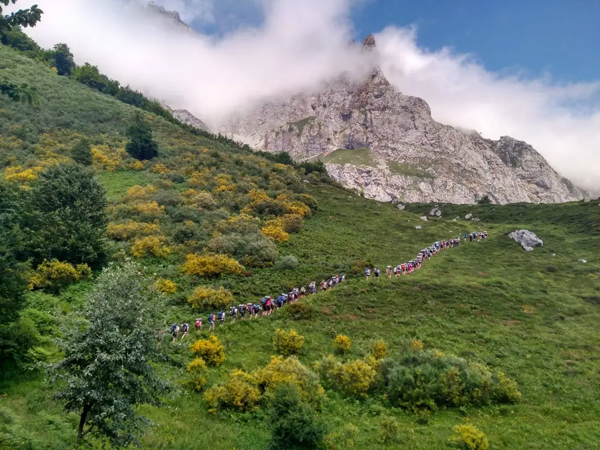

Campamentos 2027
Que los niños se acerquen a Dios a través de sus monitores, la naturaleza y la vida de oración.

Turnos del verano
San Martín 1
20–30 de junio
4º, 5º y 6º de Primaria
Hasta 12 monitores
San Martín XL
30 de junio – 11 de julio
1º y 2º de ESO
Hasta 12 monitores
San Martín XL2
11–18 de julio
1º y 2º de ESO
Hasta 12 monitores
PEJ Loyola
12–19 de julio
3º y 4º de ESO · peregrinación
Entre 12 y 20 monitores
Los tres primeros se celebran en el monasterio de la parroquia en San Martín de Don (Burgos). Bachillerato y universitarios: campamento diocesano en Picos de Europa. Cada monitor va a un solo campamento.
Requisitos para ser monitor
El monitor no es un amigo para pasarlo bien, sino un referente que se entrega por la misión.
El formulario de candidatura está cerrado.
- Vida de oración y vida apostólica: participar en las catequesis o actividades de la parroquia. Es la condición principal.
- Tener 18 años durante el campamento. Los menores de 18 no pueden ser monitores.
- Título oficial de monitor de ocio y tiempo libre. Si no lo tienes: curso con Linkceo, 4 fines de semana, 350 €.
- Asistir a la reunión introductoria y a la preparación: convivencia de Navidad y Anleo Zero.
- Firmar el contrato de voluntario si eres seleccionado.
El camino del monitor
- Reunión introductoria Imprescindible para ser monitor.
- Candidatura Formulario de la parroquia (ahora cerrado).
- Curso de monitor Si no tienes el título: 4 fines de semana con Linkceo, en Boadilla. Fecha por determinar.
- Convivencia de Navidad Formación, oración y equipo.
- Selección y contrato Los seleccionados firman el contrato de voluntario.
- Anleo Zero Mayo–junio: preparamos los campamentos en San Martín de Don.
- Campamentos Del 20 de junio al 19 de julio.
Preguntas frecuentes
¿Quién puede ser monitor?
Quien tenga 18 años durante el campamento, el título oficial de monitor de ocio y tiempo libre y participe en la vida de la parroquia.
Tengo 17 años, ¿puedo ser monitor?
No. Hay que tener 18 años durante el campamento.
¿Puedo ir a más de un campamento?
No. Cada monitor va a un solo campamento: los turnos se encadenan o se solapan.
¿Puedo elegir campamento?
Indica tu preferencia en el formulario. La asignación definitiva se hace en la selección.
No tengo el título, ¿qué hago?
Puedes hacer el curso con Linkceo: son 4 fines de semana.
¿Cuánto cuesta el curso y quién lo paga?
Cuesta 350 € y lo paga cada asistente. La parroquia organizará actividades para ayudar a financiarlo en la medida de lo posible.
¿Qué significa «vida de oración y vida apostólica»?
Que la fe forma parte de tu vida y participas en las catequesis o actividades de la parroquia.
¿Es obligatoria la reunión introductoria?
Sí. Si no pudiste ir, habla con los supervisores: Iván Jaques, Luis Izquierdo y Sergio Camino.
¿Qué es Anleo Zero?
La preparación de los campamentos en San Martín de Don, entre mayo y junio.
¿Qué diferencia hay entre XL y XL2?
Son para las mismas edades (1º y 2º de ESO) en fechas distintas.